Woman
| Config name | canafis_woman2 |
| NPC id | 1028 |
| Combat level | 24 |
| Hitpoints | 60 |
| Attack / Strength / Defence | 10 / 10 / 10 |
| Respawn | 50 ticks |
| Options | Talk-to, Attack |
| Category | canafis_citizen |
| Wander range | 5 tiles from spawn |
| Max range | 20 tiles from spawn |
| Area folder | area_canifis |
| Defined in | scripts/areas/area_canifis/configs/canifis.npc |
| Bonuses | Stab def -21, Slash def -21, Crush def -21, Magic def -21, Range def -21 |
Woman
One of RuneScape's many citizens.
Show all 2 spawns on the world map → Open in knowledge graph →
Drops
Drop script: scripts/areas/area_canifis/scripts/canafis_citizen.rs2 (category handler _canafis_citizen)
Always dropped
| Item | Quantity | Rarity | Notes |
|---|---|---|---|
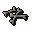 Wolf bones | 1 | Always |
Drop table
| Item | Quantity | Rarity | Notes |
|---|---|---|---|
| 1 | 25/128 (19.53%) | ||
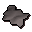 Grey wolf fur | 1 | 25/128 (19.53%) | |
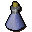 Vial of water | 1 | 25/256 (9.77%) | |
| 2 | 25/256 (9.77%) | ||
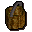 Bucket | 2 | 25/512 (4.88%) | |
| 6 | 5/128 (3.91%) | ||
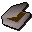 Tinderbox | 2 | 5/128 (3.91%) | |
| 1 | 5/256 (1.95%) | ||
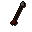 Steel arrow | 1 | 5/256 (1.95%) | |
| Steel arrow(p) | 1 | 5/256 (1.95%) | |
| 5 | 5/256 (1.95%) | ||
| 2 | 5/256 (1.95%) | ||
| 2 | 5/256 (1.95%) | ||
| 2 | 5/256 (1.95%) | ||
| 2 | 5/256 (1.95%) | ||
| Raw bear meat | 2 | 5/256 (1.95%) | |
| 20 | 5/256 (1.95%) | ||
| 15 | 5/512 (0.98%) | ||
| 16 | 5/512 (0.98%) | ||
| 38 | 5/512 (0.98%) | ||
| 50 | 5/512 (0.98%) | ||
| 96 | 5/512 (0.98%) | ||
| 120 | 5/512 (0.98%) | ||
| Herb drop table table | see table | 1/256 (0.39%) | |
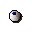 Eye of newt | 1 | 1/256 (0.39%) | |
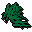 Snape grass | 1 | 1/256 (0.39%) | |
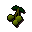 Jangerberries | 1 | 1/256 (0.39%) | |
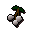 White berries | 1 | 1/256 (0.39%) | |
| Limpwurt root | 1 | 1/256 (0.39%) | |
| 1 | 1/256 (0.39%) | ||
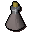 Blamish oil | 1 | 1/512 (0.2%) | |
| Gem drop table table | see table | 1/512 (0.2%) |
Locations
| Area | Coordinates | Level | Count | Map |
|---|---|---|---|---|
| Canifis | 3485, 3489 | 0 | 1 | view |
| Canifis | 3490, 3472 | 1 | 1 | view |
Dialogue
WomanIf I were as ugly as you I would not dare to show my face in public!
WomanI have no interest in talking to a pathetic meat bag like yourself.
WomanI don't have time for this right now.
WomanLeave me alone.
WomanGet lost!
WomanOut of my way, punk.
WomanHave you no manners?
WomanI don't have anything to give you so leave me alone, mendicant.
WomanHmm... you smell strange...
PlayerStrange how?
WomanLike a human!
PlayerOh! Er... I just ate one is why!
WomanDon't talk to me again if you value your life!